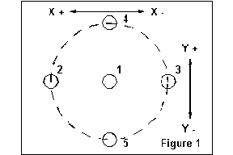

One of the simplest uses of variables is to set up positions from which a set of milling operations can be performed. In this capacity these variables work somewhat like the coordinate systems that are common to many g code implementations.
|
This program assumes that the drill bit is already loaded and that
the machine is home. The pattern is five holes. One in the center
and four on a 1 inch radius around that center hole. Opposite holes
in the pattern are aligned with the axes in what could be called a
diamond. (see figure 1)
We will begin by assigning values to two variables. We can then use these variables as the center of the hole pattern and increment the drilling operation with respect to that center location.
|
|

|
N10 #1000 = 4.5120 (x distance for center
of set of 4 holes)
N12 #1001 = 2.6873 (y distance for center of set of
holes)
N14 g0 x#1000 y#1001 z1 (move to center location)
N16 g1 f4 z2 (drill center hole)
N18 g0 z0
N20 x[#1000 + 1.0] (move to first diamond hole)
N22 z1
N24 g1 f4 z2 (drill first diamond corner hole)
N26 g0 z0
N28 x[#1000 - 1.0] (move to second diamond hole)
N30 z1
N32 g1 f4 z2 (drill second diamond corner hole)
N34 g0 z0
N36 x#1000 y[#1001 + 1.0] (move to third diamond
hole)
N38 z1
N40 g1 f4 z2 (drill third diamond corner hole)
N42 g0 z0
N44 y[#1001 - 1.0] (move to fourth diamond hole)
N46 z1
N48 g1 f4 z2 (drill fourth diamond corner hole)
N50 g0 z0
N52 g53 x0 y0 z0
N54 m2
This set of code blocks could have been written using the real values for the locations, however the use of just two variables allows the entire pattern to be shifted rather easily during production to keep the hole locations within the tolerances specified on the print. Writing this kind of code using variables also allows for wide variation in the setup of the machine for milling.
In this example the pattern is a fixed shape and size - perhaps a pipe flange or a bearing mount for a sliding rod. The two variables allow the operator to quickly shift the pattern to the exact coordinates where it should be placed. In the example the editing would have to be done to the program code on lines N10 and N12 because the variables are implicit. Explicit variables would allow the operator to change the values in the emc.var file and reload it.
Code like that developed in this example can easily be copied and pasted several times into the same program to reproduce the same pattern at several locations. The only additional code that must be added is a line that changes the variables for each location. This could be as simple as #1000 = (number) before each pasted chunk, or it could be an increment from the first location. Example two shows how to increment.